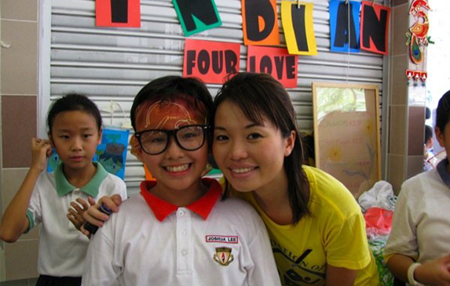
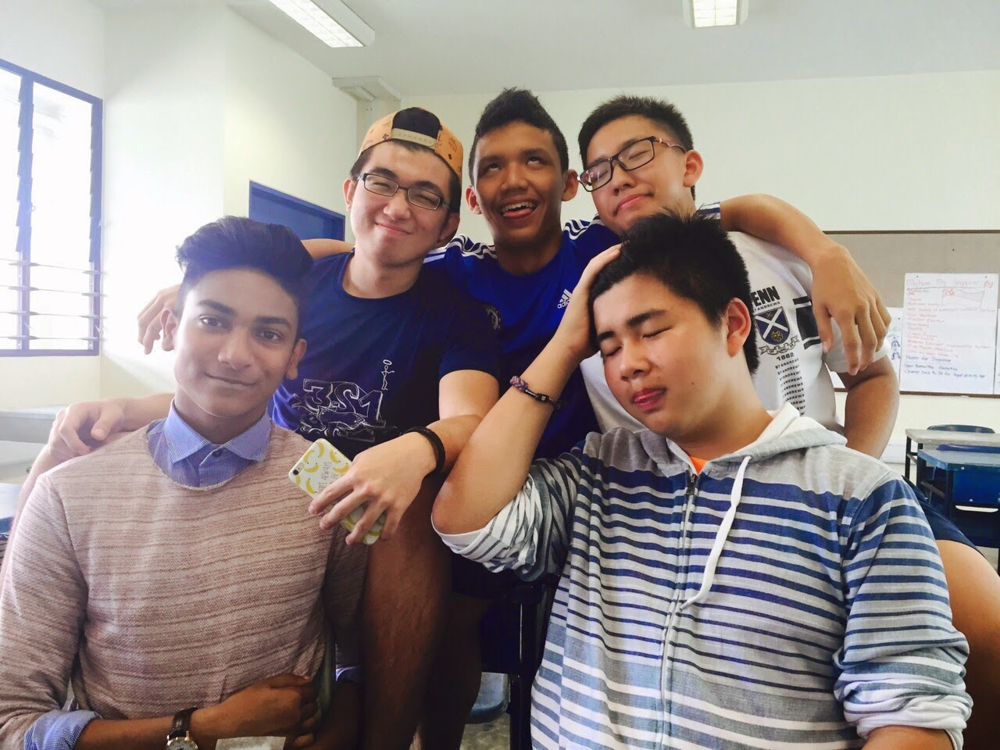
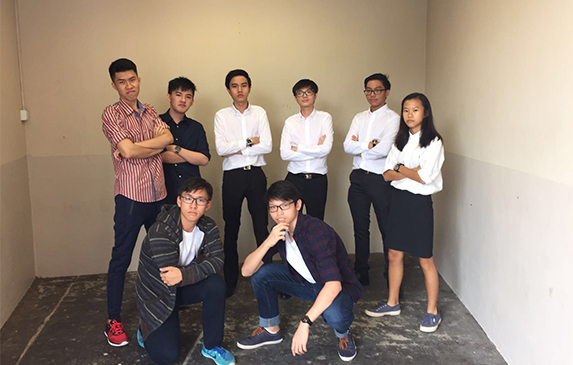

My favourite primary school teacher and I at a carnival.
I attended Geylang Methodist School (Primary) during my primary years. I did very well throughout Primary 1 - Primary 4, mainly thanks to my parents being strict yet graceful in my studies. However, I wish I did not take their authority for granted as I got too playful and did not focus on my studies. I still did well for PSLE, however, I do wish I had put more effort in my studies. Nonetheless, I do not regret anything, as it paved the way to where I am now. I graduated with a PSLE T-Score of 229.
SECONDARY SCHOOL. (2012 - 2015)

Some of my classmates in my Secondary 4 year.
Although I was originally posted to my primary school affliate, Geylang Methodist School (Secondary), Mr Goh, the vice-principal of St. Andrew's Secondary School at that time, interviewed me for my appeal and immediately accepted me into his school. I was very grateful as this allowed me to join my good friend, Khoo Zhenyu, at this all-boys school. Both of us joined the Boys' Brigade, as a continuation from our primary school Co-Curricular Activity (CCA). There, I learnt many important lessons such as the qualities of leadership, discipline and such. While I was very involved in the Boys' Brigade, I also learnt to balance my time well for my studies in Secondary 3 and 4. I took my 'O' Levels in November 2015, doing decently well with a raw L1R5 of 15 and L1R4 of 12.
POLYTECHNIC. (2016 - now)

The bunch that I see in school everyday.
I am currently studying in Singapore Polytechnic, for a Diploma in Infocomm Security. I really like my classmates and the classes I attend. I joined the school's club, DMIT Club, as a subcommittee member of Publications. I am also taking Krav Maga in SP, which is a self-defense martial art. I really hope I do can well in my studies here and get a nice job in the future.